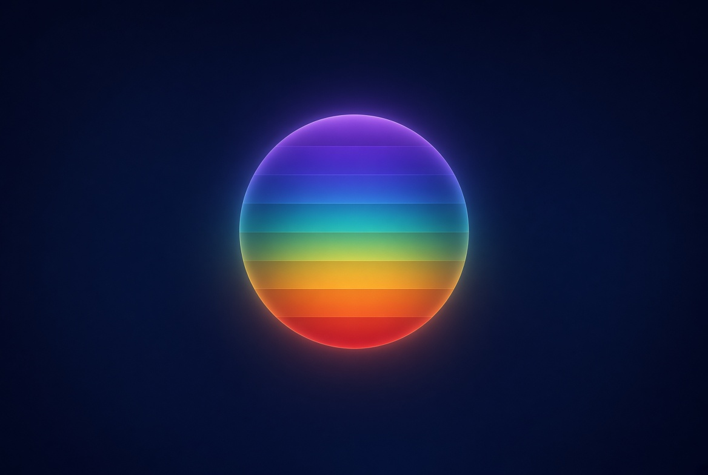
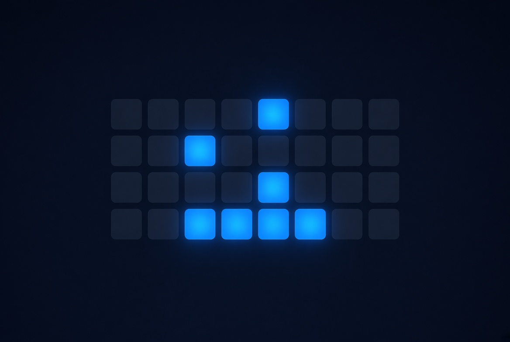
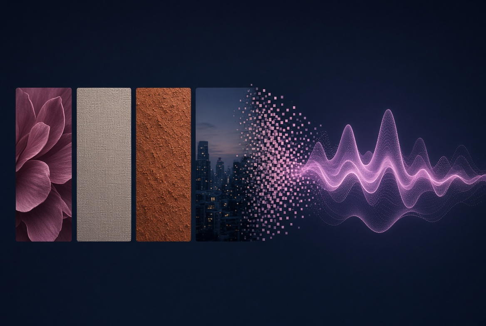
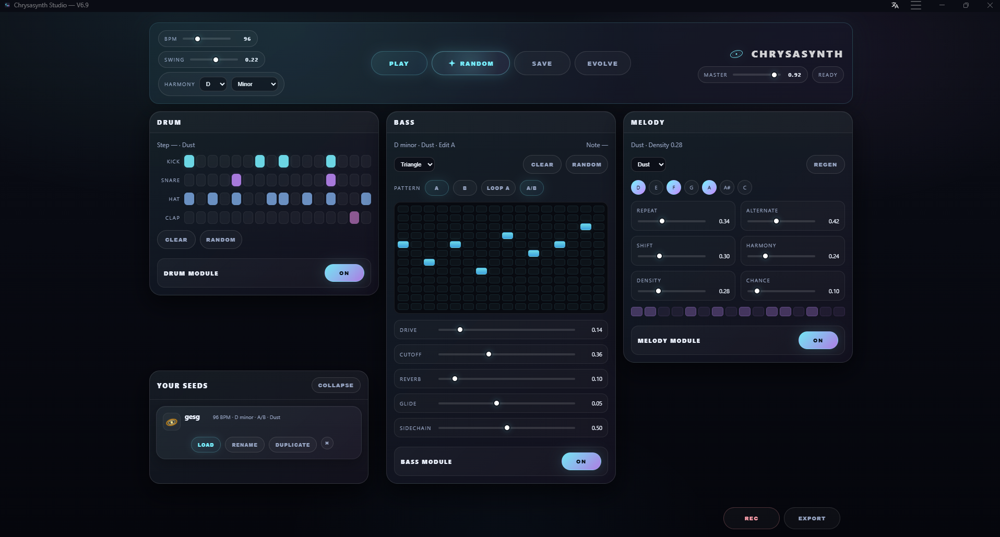

The tools to shape sound.
40+ browser-based audio tools. No installs.
From ambient textures to melodic generators.
Start Here
Four tools hand-picked for your first sonic journey.
NeuroFlow
Brainwave entrainment for focus, relaxation and deep states of mind.
Open Tool →Aura Sampler
Layer and evolve ambient textures in real time.
Open Tool →Cosmic Garden
An interactive ambient space to explore and inhabit.
Open Tool →Subdive
Seed-driven melodic systems that generate infinite sequences.
Open Tool →Explore by Category
Choose a universe. Each category is a different dimension of sound.
Creative
Generators, synthesizers and experimental sonic instruments.
Explore →Wellness
Binaural beats, brainwave entrainment and frequency healing.
Explore →FX
Professional-grade effects: reverb, delay, modulation and more.
Explore →Utility
Practical audio calculators, converters and analysis tools.
Explore →Featured Tools
The tools our community keeps coming back to.

Hold The Frequency
Focus chakra meditation through seven guided frequency colors.
Launch →
Axis
Hybrid analog step sequencer for organic acid basslines.
Launch →
pixelTone Bloom
Turn photos into soft ambient textures.
Launch →Subdive
Seed-driven melodic systems. One number, infinite sequences.
Launch →Frequency ⇄ Note
Convert frequencies into musical notes and tuning references.
Launch →Orbit Pan
360° orbital panning — place your sound anywhere in space.
Launch →What can you create?
Forge is a means, not an end. Here's where it takes you.
Ambient Soundscapes
Layer evolving textures and tonal drones for work, rest or creative flow.
Melodic Ideas
Generate chord progressions and sequences. Break creative blocks instantly.
Binaural Sessions
Engineer focus, meditation or sleep with precision frequency therapy.
Evolving Textures
Build granular pads and morphing soundscapes with organic complexity.
Immersive Sound Apps
Downloadable experiences for focus, relaxation and daily practice.
Bowl Orbit
Resonant sound bowls for deep relaxation.
View App →DualTone
Dual-frequency soundscapes for calm and focus.
View App →ZenBox
Breathing exercises guided by sound and motion.
View App →Brainwave
Brainwave audio for sleep, focus and meditation.
View App →HoldFreq
Seven chakra frequencies for mindful concentration.
View App →Tool Explorer
Every tool. Filter by category or search by name.
Sound is a medium
for exploration.
Forge exists because the tools to shape sound should be accessible, immediate and beautiful. Not buried in DAWs. Not locked behind paywalls. Not intimidating.
We believe the best creative tools disappear. You stop seeing the interface and start hearing ideas. That is the standard we build to.
Chrysasynth is a laboratory. Every tool is an experiment. Every session is a discovery.
We design for exploration, not efficiency.
No setup. No friction. Open and play.
Simple on the surface. Limitless underneath.
Sound and interface deserve equal care.
Grow Your
Seeds.
Studio brings rhythm, bassline and melodic generation into one focused workspace. Save named Seeds, recall patterns and continue evolving your ideas.
